Chapter 11 walked through the design dimensions of a scintillation detector configuration. This chapter walks through specific configurations from the Scionix catalog, organized by the family they belong to. Each example shows the configuration code, the application it was designed for, and the engineering reasoning behind the choices. The point is not to memorize specific part numbers but to see the logic of how the choices combine into a usable product.
Configurations that ship without an integrated photodetector. The customer adds the photodetector downstream, or uses the crystal in a laboratory setup with multiple readout options.
Standard C-style: hermetically sealed crystal with optical-grade glass window on the readout face, aluminum or stainless steel canister, diffuse reflector on the non-readout faces.
Typical configurations: - C-25S-25-NaI:Tl: 25 mm by 25 mm NaI(Tl) for laboratory use - C-51S-51-NaI:Tl: 51 mm by 51 mm NaI(Tl), the workhorse research crystal - C-76S-76-NaI:Tl: 76 mm by 76 mm NaI(Tl), the classical 3-by-3 inch standard - C-25S-25-CsI:Tl: 25 mm by 25 mm CsI(Tl) for SiPM readout downstream - C-51S-51-LaBr3:Ce: 51 mm by 51 mm LaBr3:Ce for high-resolution spectroscopy
CA-style is C-style with a thin entrance window for low-energy work. Used when the customer needs to detect 5 to 30 keV X-rays and supplies their own readout. The thin window is typically 25 to 100 micron beryllium or aluminized mylar.
CD-style is C-style with built-in voltage divider preamplifier, intended for direct connection to a standard PMT downstream. Less common than the plain C-style.
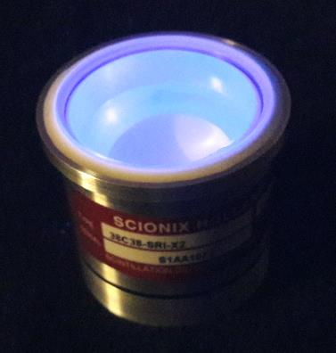
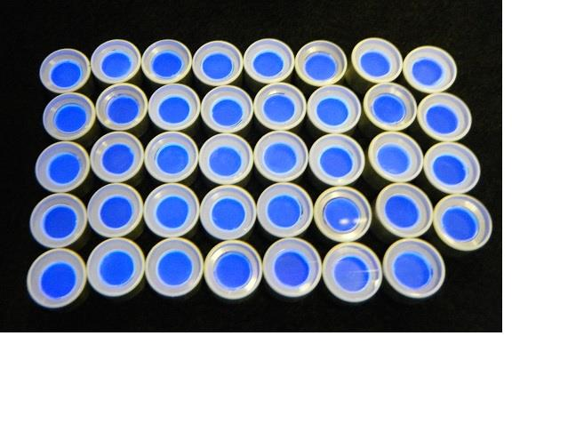
The classical scintillation detectors. The crystal and PMT ship as a sealed integrated unit.
Standard B-style: side-viewing PMT integrated with the crystal, hermetic seal, voltage divider supplied separately or built in.
Typical configurations: - B-25S-25-1-R6231-NaI:Tl: 25 mm by 25 mm NaI(Tl) with 1-inch low-background PMT. Compact spectrometer for portable use. - B-51S-51-2-R6233-NaI:Tl: 51 mm by 51 mm NaI(Tl) with 2-inch PMT. General-purpose laboratory detector. - B-76S-76-3-R6231-NaI:Tl/M: 76 mm by 76 mm NaI(Tl) with 3-inch PMT and mu-metal magnetic shield. The standard low-background gamma counter. - B-51S-51-2-R6233-CsI:Na: 51 mm by 51 mm CsI(Na) with 2-inch PMT. For ruggedized field instruments. - B-25S-100-1-9266B-CsI:Na: 25 mm by 100 mm CsI(Na) with 1-inch high-temperature PMT. Down-hole well-logging probe.
BA-style is B-style with a thin entrance window for low-energy X-ray work. Beryllium or thin aluminum window. Beryllium windows are typically 100 to 200 micrometers thick depending on the energy range of interest.
BD-style is B-style with built-in voltage divider. The dynode chain network, the high-voltage routing, and any front-end electronics are integrated into the housing. Reduces external cabling and simplifies field replacement.
BM-style adds a mu-metal magnetic shield. Standard for any deployment near transformers, motors, or magnetic field sources, including PET scanners and certain industrial environments.
A-style uses a demountable PMT, with the crystal and PMT shipping as separate components that mate together with a removable optical-coupling joint. Used in research and laboratory settings where the same crystal might be tested with multiple PMTs.
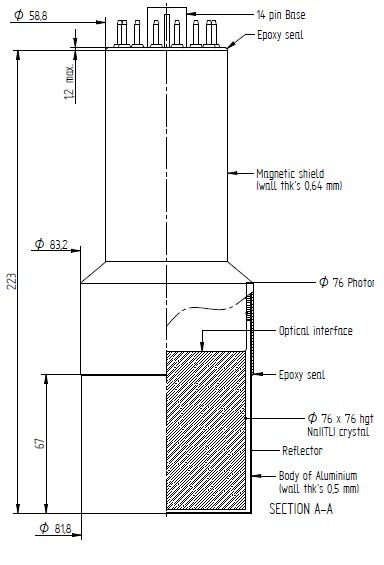
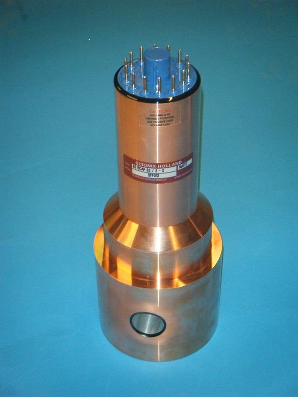
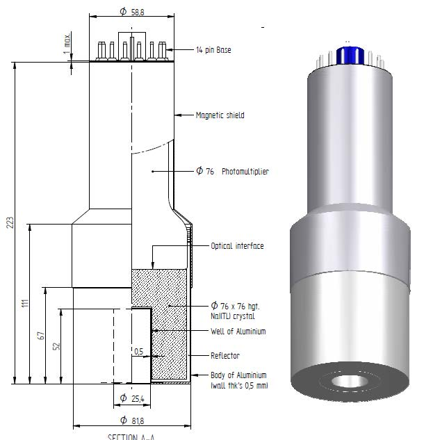
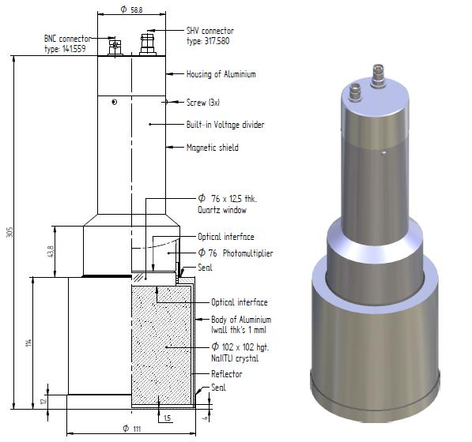
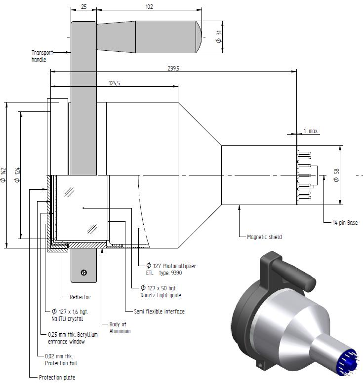
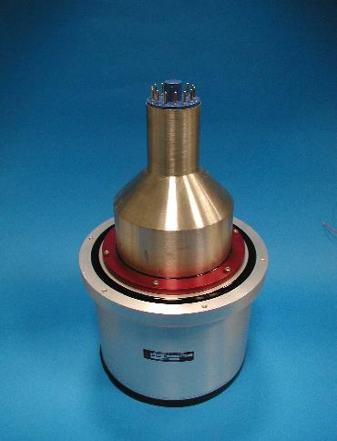
Liquid scintillation cocktails are loaded into glass or plastic vials together with the radioactive sample, and the vials are read in a dedicated counter that monitors all sides of the vial through multiple PMTs in coincidence.
The standard configuration is a multi-PMT vial counter with internal lead shielding and an automated sample changer. This is a separate product class from the configurations covered above; the vial counter is an instrument, not a single detector. Berkeley Nucleonics and Scionix offer specific liquid scintillation counters configured for the application: tritium and C-14 bioassay, environmental low-level beta counting, and rapid-screening configurations for nuclear medicine.
For the engineer specifying a liquid scintillation system, the dominant choice is the cocktail formulation rather than the detector. Cocktails are formulated to dissolve the sample matrix (aqueous, organic, biological tissue), to minimize chemical and color quenching, and to provide stable counting over the assay period. The detector electronics handle the cocktail-specific calibration and quench correction.
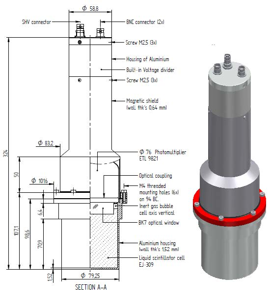
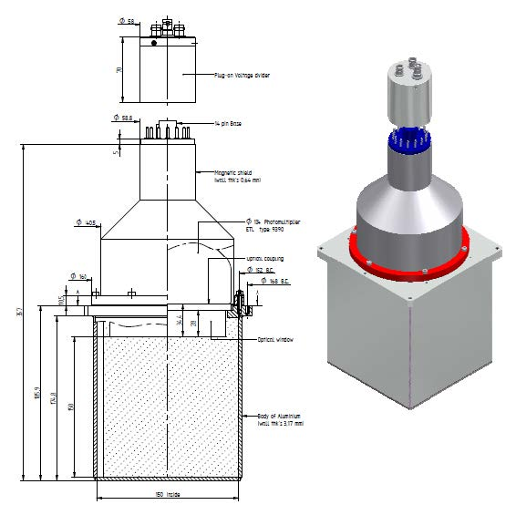

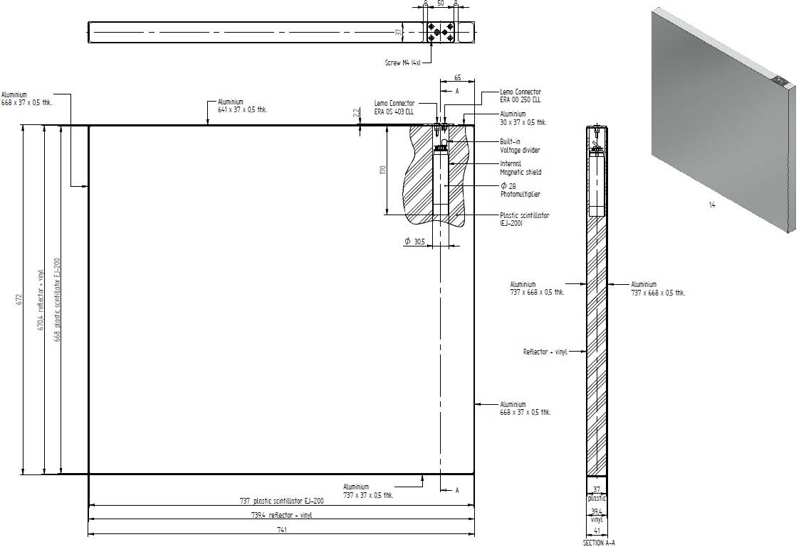
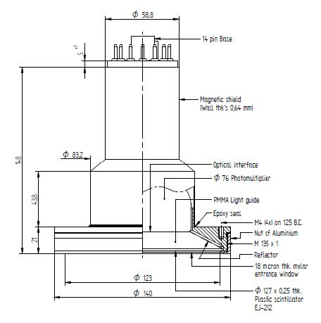
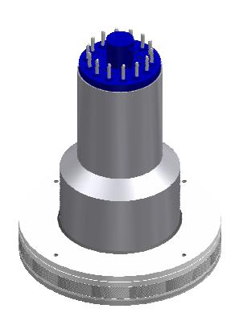
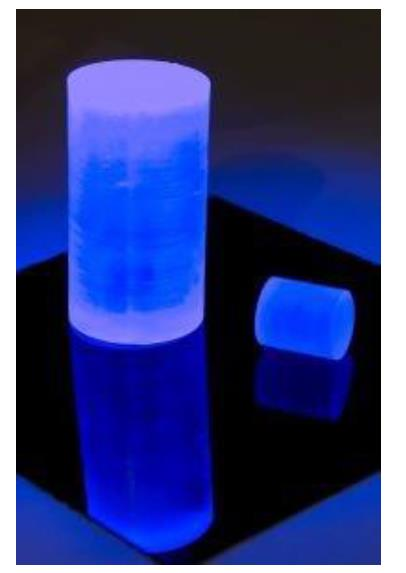
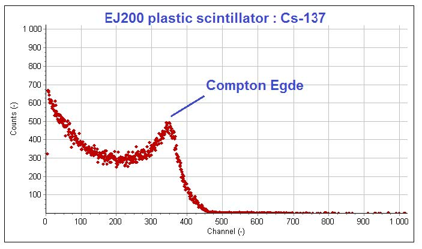
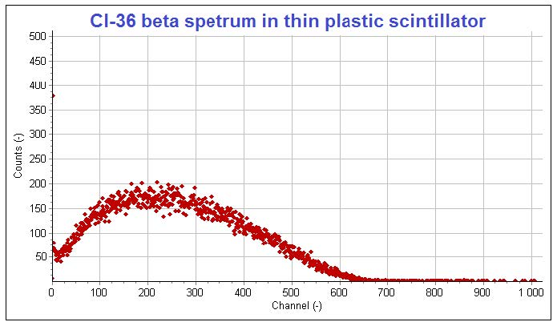
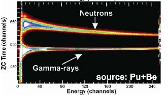
Plastic scintillator detectors come in three dominant formats.
Compact bar: a few-cm to 30-cm long plastic scintillator bar wrapped in reflector and optical grease, read out by a PMT at one end. Used for cosmic-ray muon detection, charged-particle counting, simple beta surveys.
Large panel: a meter-scale plastic sheet, several centimeters thick, read out by multiple PMTs at the edges. Used in neutron portal monitors and large-area gamma-monitoring panels. Typical configurations: - Plastic panel 1 m by 2 m by 5 cm with 4 to 8 PMT readout, for vehicle portal monitors. - Plastic panel 0.5 m by 1 m by 2 cm for pedestrian portal monitors.
Hodoscope array: multiple thin plastic bars arranged for spatial resolution. Used in physics experiments, in cosmic-ray muography, and in some specialized security applications.
PSD plastic formulations are used where neutron-gamma discrimination is required. The standard product specifications include the figure-of-merit at gamma-equivalent energy of 0.5 MeV and 1 MeV, the achievable count rate, and the dynamic range over which PSD remains viable.
Boron-loaded plastic for thermal neutron detection. The boron content (typically 1 to 5 percent by weight) lets the plastic detect thermal neutrons through the 10B(n, alpha) reaction. Used in large-area neutron monitoring where the elpasolite materials are too expensive for the area required.

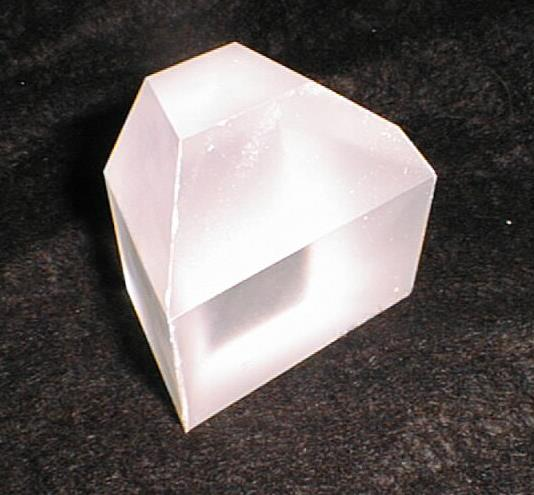
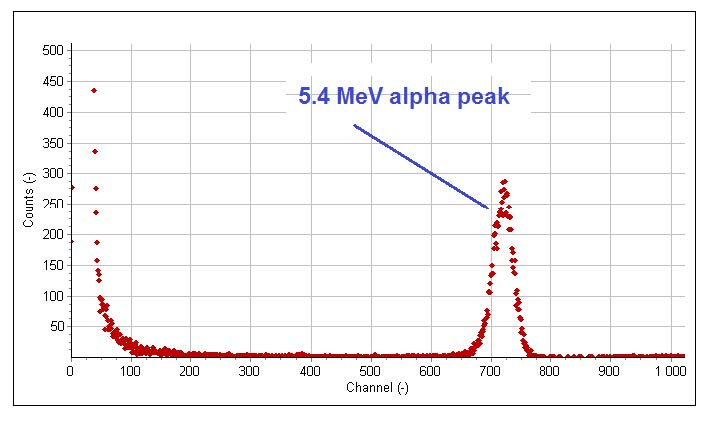
Crystal coupled to one or more silicon photodiodes, with a charge-sensitive preamplifier in the housing. The crystal is typically CsI(Tl) or GAGG:Ce where the long-wavelength emission matches photodiode QE.
Typical configurations: - D-25S-25-CsI:Tl: 25 mm by 25 mm CsI(Tl) on a 1 cm by 1 cm photodiode. - D-50S-50-GAGG:Ce: 50 mm by 50 mm GAGG:Ce on a tiled photodiode array. Used in CT scanner arrays and industrial gauges.
The photodiode-coupled configuration's appeal is the absence of HV and the compact form factor. Its limitation is the noise floor set by the preamplifier; with a low-noise design, energy thresholds of 30 to 50 keV are achievable, but pushing below this without SiPM gain becomes difficult.

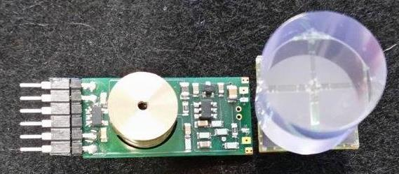
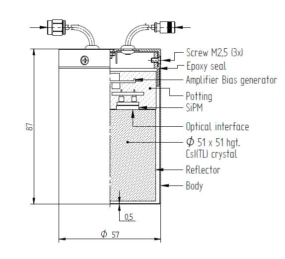
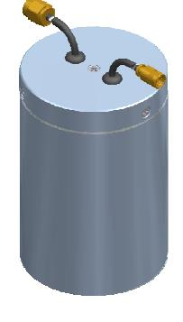
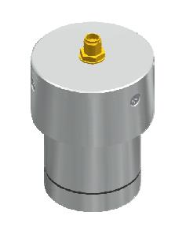
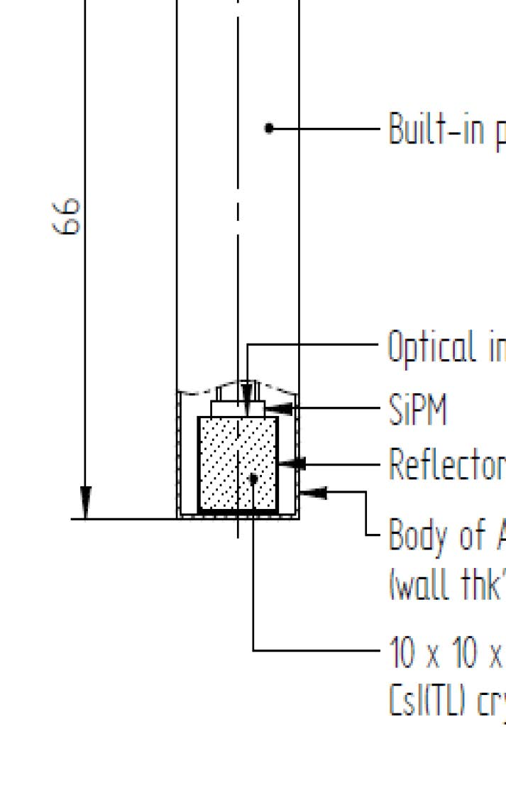
The dominant new configuration. Crystal coupled directly to one or more SiPM dies, with active temperature compensation in the integrated electronics.
Typical configurations: - S-25S-25-12mm-HD-RGB-CsI:Tl/A/D: Compact handheld spectrometer with built-in alpha pulser and digital pulse processor. Standard for new-generation isotope identifiers. - S-32S-32-15mm-HD-NUV-CLLBC/A/D: Dual gamma-neutron handheld with PSD on the digital pulse processor. Replaces older PMT-based dual-mode detectors. - S-array-4mm-20mm-12x12-HD-NUV-LYSO:Ce/D: TOF-PET ring module. Each pixel has its own SiPM and is timestamped to picosecond accuracy. - S-51S-51-30mm-HD-NUV-NaI:Tl: 2 inch by 2 inch NaI(Tl) on a 30 mm SiPM array. Mid-range general-purpose SiPM-coupled detector.
The S-style family has expanded rapidly between 2020 and 2026 as SiPM technology matured. The product range now spans from sub-cm pixels for PET arrays through full inch-class general-purpose detectors.

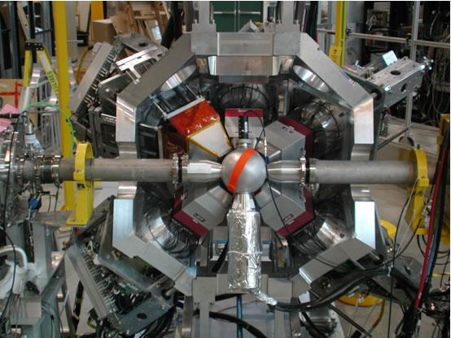
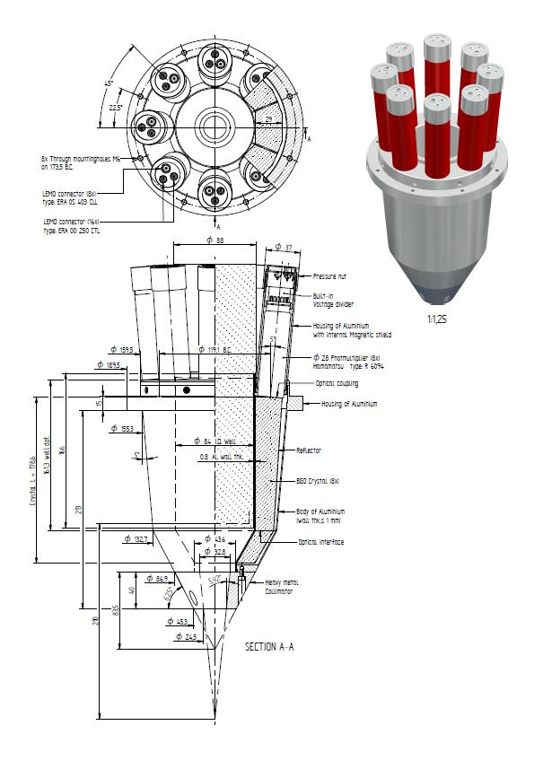
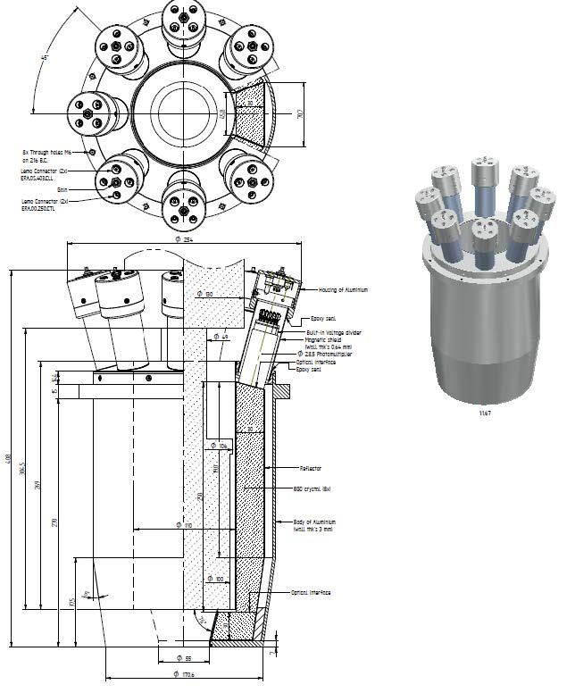
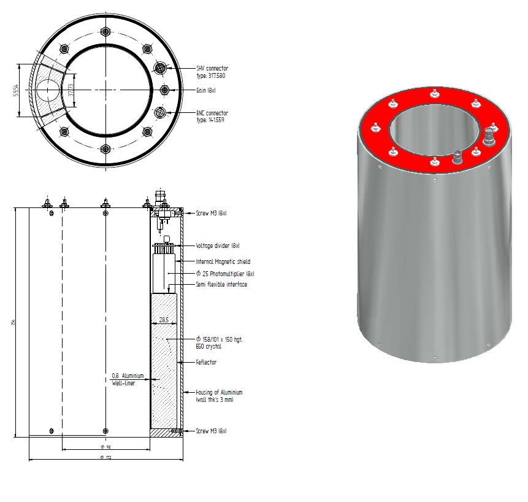
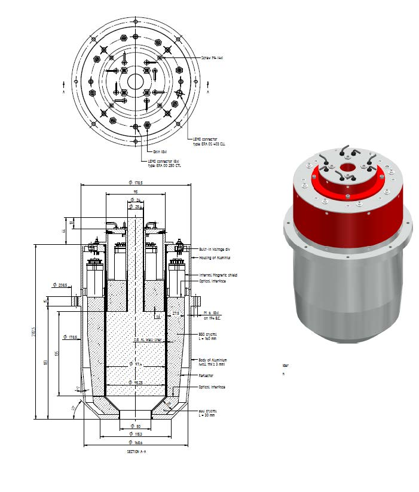
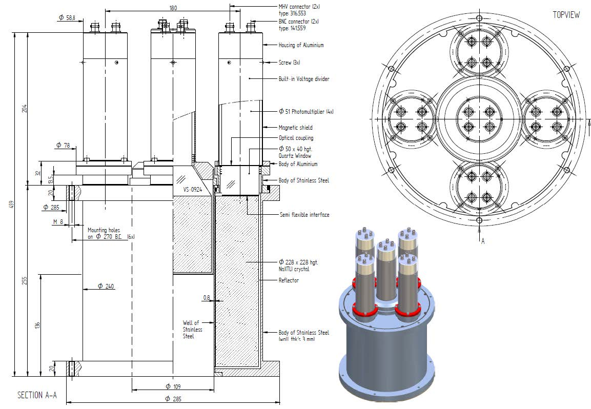
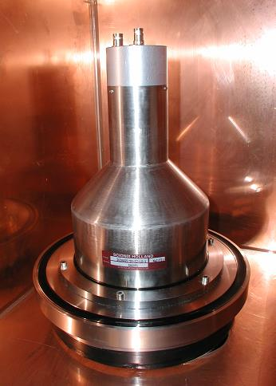
Beyond the standard catalog, custom configurations are designed for specific applications. Examples include:
Anti-coincidence shields. A primary detector (typically HPGe or NaI(Tl)) surrounded by an annular plastic or NaI(Tl) scintillator that vetoes events depositing energy in both. Used in low-background counting and Compton suppression spectrometers.
Position-sensitive detectors. A scintillator coupled to a position-sensitive PMT (PSPMT) or a SiPM array, with the ratio of light reaching different photodetector regions providing position information. Used in gamma cameras and in some research applications.
Phoswich detectors. Two scintillators with different decay times stacked optically in series, read out by a single photodetector. Pulse-shape analysis distinguishes events occurring in the first scintillator from events in the second. Used for alpha-beta-gamma discrimination in mixed-radiation environments.
Well counters. A scintillator with a cylindrical hole drilled into it, into which the radioactive sample is placed. Achieves nearly 4-pi solid angle. Used for low-level sample counting, especially in nuclear medicine for radioassay of pharmaceutical preparations.
Compton cameras. Two layers of position-sensitive scintillator with the kinematics of Compton scattering between the layers used to reconstruct source direction. An emerging technology with applications in medical imaging and in radioactive source localization.

The compact handheld instrument is the largest single product category in the modern detector market and has been completely transformed by SiPM readout. The standard 2026 handheld is roughly the size of a large flashlight, weighs under a kilogram, includes a built-in display or wireless smartphone link, and runs for at least 8 hours on a single battery charge.
Typical handheld configurations:
Gamma-only isotope identifier (low cost): - Crystal: NaI(Tl) 38 mm by 38 mm - Photodetector: 4-die SiPM array, NUV-HD - Electronics: digital pulse processor, embedded ARM microcontroller - Output: USB or Bluetooth to smartphone
Gamma-only isotope identifier (high resolution): - Crystal: CeBr3 38 mm by 38 mm - Photodetector: 4-die SiPM array, NUV-HD - Electronics: same as above - Performance: 4 percent FWHM at 662 keV
Dual gamma/neutron handheld: - Crystal: CLLBC 38 mm by 38 mm - Photodetector: 4-die SiPM array, NUV-HD - Electronics: digital pulse processor with PSD firmware - Performance: simultaneous gamma spectrum and thermal neutron count
Compact spectroscopic gamma detector for HALEU verification: - Crystal: LaBr3:Ce 25 mm by 25 mm or CeBr3 25 mm by 25 mm - Photodetector: single-die SiPM - Electronics: digital pulse processor - Integrated peak-search firmware identifies U-235 line at 185.7 keV
The modern handheld is an integrated product where the scintillator, photodetector, electronics, and software are co-designed. The pre-2015 generation, with separate detector head and external base or cable to a computer, has been displaced by the all-in-one architecture.

Vehicle-mounted and portal monitors are the other end of the size spectrum.
Pedestrian portal: plastic scintillator panels, typically 0.5 m by 1 m by 5 cm thick, deployed as left and right walls through which a person walks. PMTs at the panel ends. Time-correlated counting between the two panels reduces ambient gamma background. Optional thermal neutron counting via 6LiF/ZnS(Ag) screens or boron-loaded plastic at the side panels.
Vehicle portal: larger plastic panels, 1 m by 2 m by 10 cm thick, deployed as drive-through walls. Typically 4 to 8 PMTs per panel, with multiple panels per portal for redundancy and spatial resolution. Specialized digital pulse processors handle the high count rates and the multi-channel coincidence logic.
Spectroscopic portal: uses NaI(Tl) or LaBr3:Ce panels rather than plastic, allowing isotope identification of any flagged event. More expensive per unit area; deployed at higher-value locations such as port-of-entry primary screening lines.
Mobile vehicle systems: truck-mounted detectors that drive through an area to map gamma activity. Combinations of large plastic panels for sensitivity and smaller spectroscopic detectors for identification.
The portal monitor market has been surprisingly stable in detector technology since the He-3 alternative shift around 2010. The current designs are mature; performance improvements have come more from electronics and software than from detector hardware.
BNC in Practice - The configuration is what gets ordered, the calibration is what gets shipped
A configuration code defines what the detector is. A calibration certificate defines what the detector measured at the factory. The two ship together. The customer should never accept a detector without a calibration certificate, and the manufacturer should never ship one without one. The certificate documents the energy resolution, peak position, count rate at a stated source activity, and any other application-relevant performance parameter. Five years from now, when the detector's performance has drifted or the customer is troubleshooting an in-service problem, the original calibration certificate is the reference point for what changed. Lose the certificate and you lose the ability to diagnose drift.
The Scionix catalog of standard configurations runs to several hundred entries. The space of customizations runs into tens of thousands. Most production detectors fit a catalog configuration with minor adjustments. The genuinely custom designs, where the configuration code is project-specific, run perhaps 5 to 10 percent of orders by volume but a much higher fraction by engineering effort. The standard catalog is the starting point. The custom version is what the customer actually needs. The engineering work is bridging the two.
Take it interactively. The quiz lives on its own page. Pick one answer per question, then check your score. Auto-scored, and your answers are saved on this device. About 10 minutes.
Or read the questions and answers inline below (preserved for print and offline use).
[1] G. F. Knoll, Radiation Detection and Measurement, 4th ed. Hoboken, NJ: Wiley, 2010.
[2] Scionix Holland B.V., "Scintillation Detector Catalog," updated 2025.
[3] R. T. Kouzes et al., "Neutron detection alternatives to 3He for national security applications," Nucl. Instrum. Methods A, vol. 623, pp. 1035-1045, 2010.
[4] M. Kapusta et al., "Properties of CLLBC scintillator: A combined gamma and neutron detector," in Proc. IEEE NSS-MIC 2023, Vancouver, 2023.
[5] S. Vandenberghe et al., "Recent developments in time-of-flight PET," EJNMMI Phys., vol. 7, p. 35, 2020.